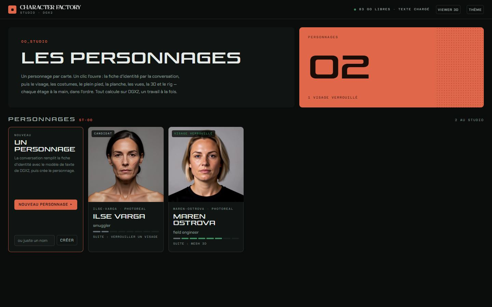
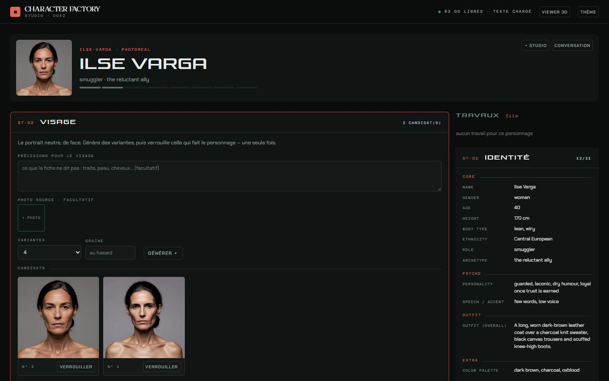
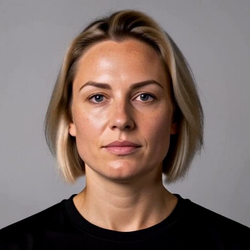
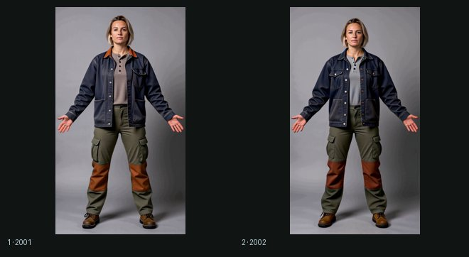
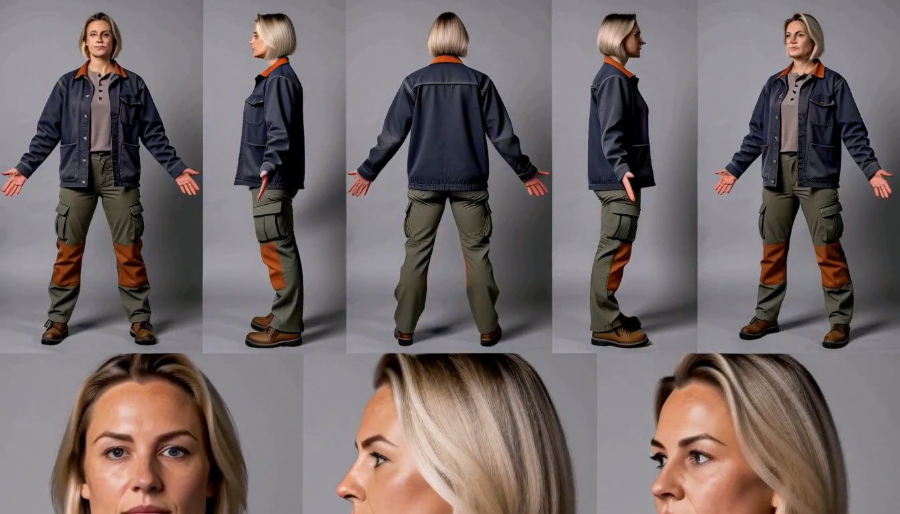
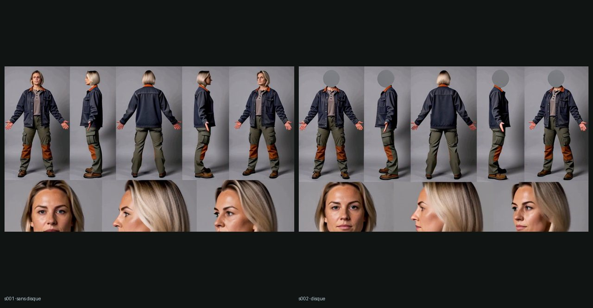
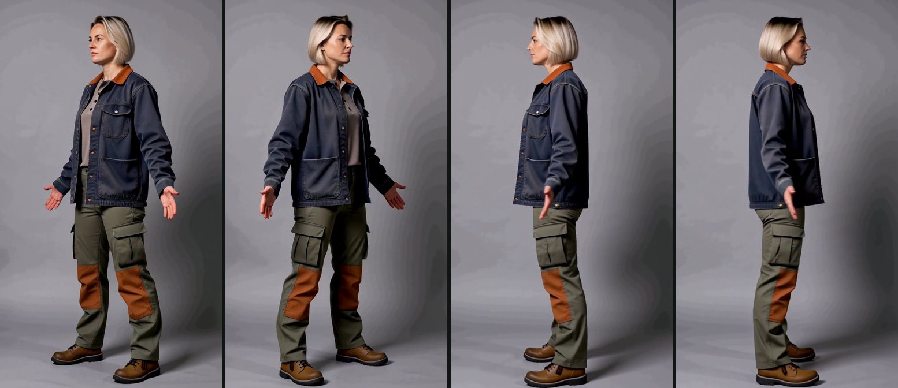
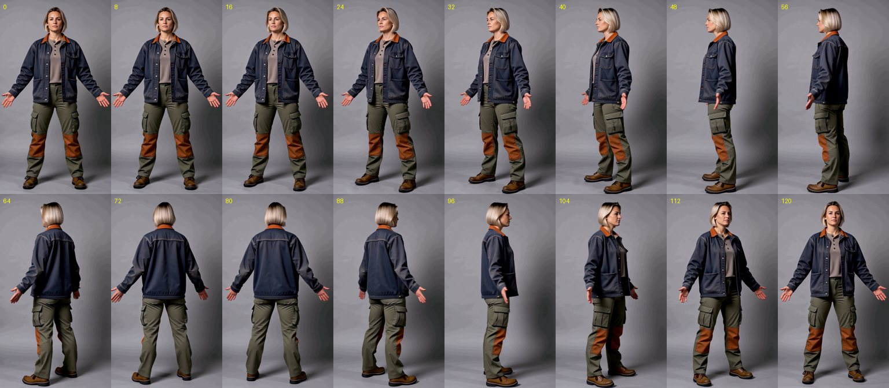
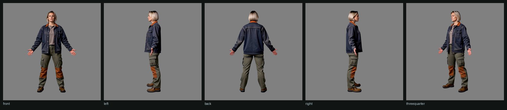

Où en est la chaîne
Prompt ou photo, visage verrouillé, costumes, planche, vues orthogonales, mesh PBR, rig SOMA, animation. Tout tourne désormais sur DGX2, et se mène à la main dans le studio : les personnages en cartes, un bloc par étage. Les quatre premiers étages tournent sur de vraies images, par H3 ; la 3D, le rig et l'animation sont câblés, pas encore lancés. Les images plus bas sont celles d'un personnage de test, Maren Ostrova, costume « travail ».
Les étages
tourne · câblé · attendLe studio
DGX2 · port 8765Une application, plus une suite de commandes. L'accueil montre les personnages en cartes ; un clic ouvre le personnage, un bloc par étage, l'étape suivante en orange. La fiche d'identité se remplit par la conversation, avec qwen3-vl 32B sur DGX2 — au banc, le seul des modèles de la machine qui range la fiche par les outils à chaque tour. Un calcul à la fois : avant chaque travail, le studio décharge le modèle de texte et vide le ComfyUI qui ne sert pas ; avant une conversation, il rend la place à son tour. Premier calcul par le studio : deux visages H3 en 52 s, modèle chargé compris.


Visage
H3 · 42 s

Planche
H3 · 65 s

Vues orthogonales
orbite · 124 frames · 7 minUne génération par vue ne tient pas les angles : H3 revient vers la pose de face du plein pied, le « profil » demandé à 90° sort vers 55°. L'orbite, elle, fait un vrai tour, identité et costume tenus — mais la caméra ne tourne pas à vitesse constante. Les frames se choisissent donc sur la largeur de la silhouette détourée par BiRefNet : face au départ, profils aux deux creux, dos au sommet entre eux, trois quarts sur l'envergure des bras.



Au banc, câblé et pas encore lancé : trois LoRA d'angle de caméra qui tournent le plein pied validé — Qwen-Image 2.1 + viewpoint-orbit, Qwen-Image-Edit 2511 + Multiple-Angles (fal), Qwen-Image-Edit 2509 + Multiple-angles (dx8152). Tous trois ont appris sur des objets : c'est au banc de dire lequel tient un corps en pied.
Ce qui attend
décisions de Cal- feu vertPremier calcul de la 3D : TRELLIS.2 sur les vues préparées (DGX2), puis UniRig sur le mesh. Et le banc des trois LoRA Qwen.
- licenceLlama-3-8B-Instruct : Kimodo en a besoin comme encodeur de texte ; dépôt Meta à accès restreint, à accepter sur Hugging Face.
- choixHunyuan3D 2.1 : son nœud ne se charge pas sur DGX2 (numpy 2.5) ; le réparer touche l'environnement ComfyUI partagé.
- choixMéthode des vues par défaut : l'orbite plutôt que la génération par vue, ou le LoRA Qwen qui gagnera le banc.
- choixDisque sur le visage de la planche : voir l'A/B plus haut.
Code : branche claude/epic-wright-y2kbrc · mode d'emploi docs/LOCAL.md · passation docs/HANDOFF.md. En ligne, la console et le viewer s'ouvrent mais ne parlent ni au modèle de texte ni aux fichiers d'un personnage : c'est le studio, sur DGX2, qui les sert pour de vrai.